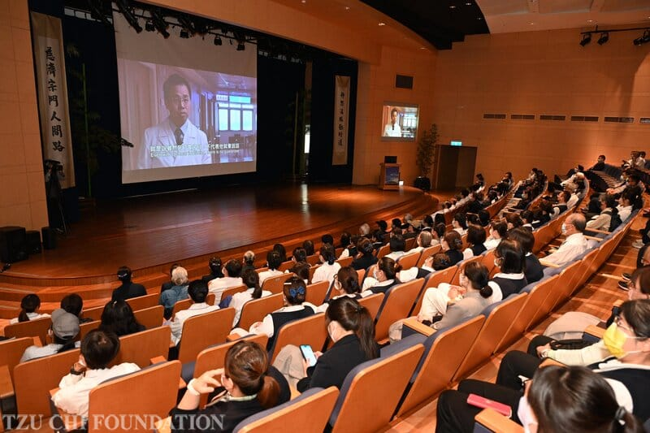
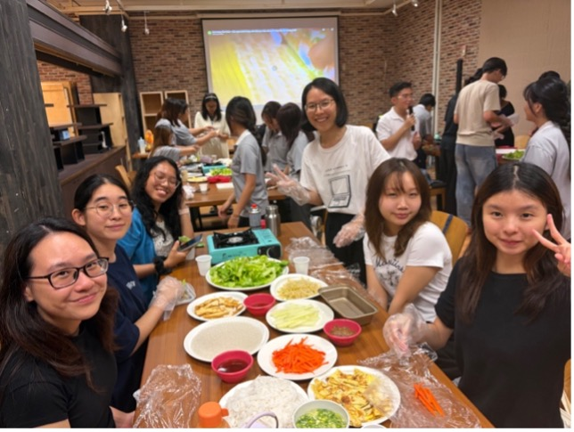
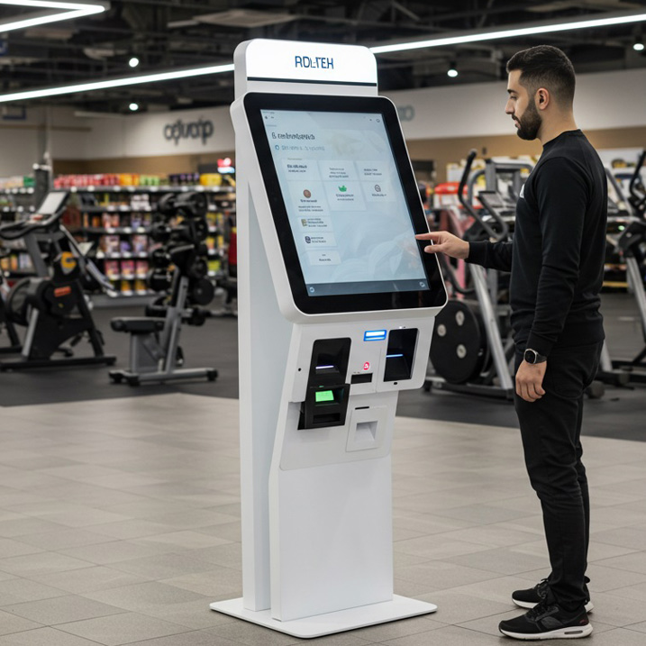

慈濟大學經營管理學系致力於高階企業管理教育，融會智慧零售、ESG永續治理與哈佛個案實務教學，培育符合國際企業期待之專業經理人。
引導學生掌握碳資產管理、企業社會責任與永續發展策略，深化綠色經濟之分析思維。
結合消費行為數據分析、品牌策略與智慧門市營運實務，培育全通路整合行銷人才。
透過高階個案分析與組織動態研討，訓練學子跨部門溝通、決策分析與危機處理能力。
引進數據挖掘、營運資訊系統與商業預測分析模型，奠定數據驅動之決策基礎。

比照國際商學院標準建置之梯形研討空間，提供翻轉教育、團體談判與口語表達演練。

提供完整商業服務流程、外場服務品質管理與營運財務管理之實境操作場域。

建置無人零售與新零售技術環境，讓學生深入體驗資訊系統與消費行為數據採集。
預留之系所宣傳短片播放空間（使用相對路徑 graph/dept_video.mp4 載入）：
與跨國企業及本土知名機構建立深厚實習合作關係，協助學子畢業前累積實務經驗。
畢業生廣泛任職於科技業、金融機構、零售流通及永續顧問機構，發揮跨域管理解決能力。
積極鏈結海外姐妹校，提供海外暑期研修、交換學生及國際雙聯學位申請管道。